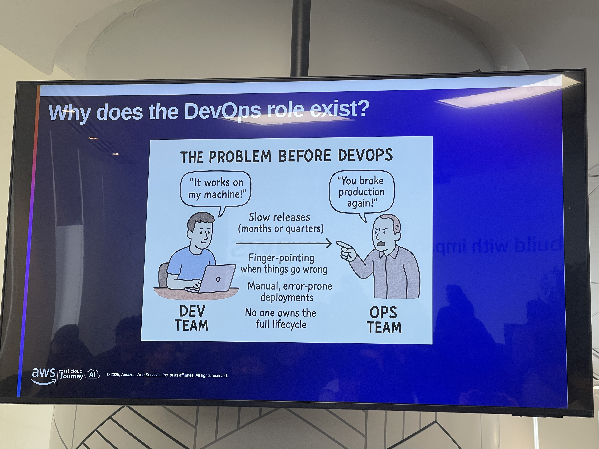
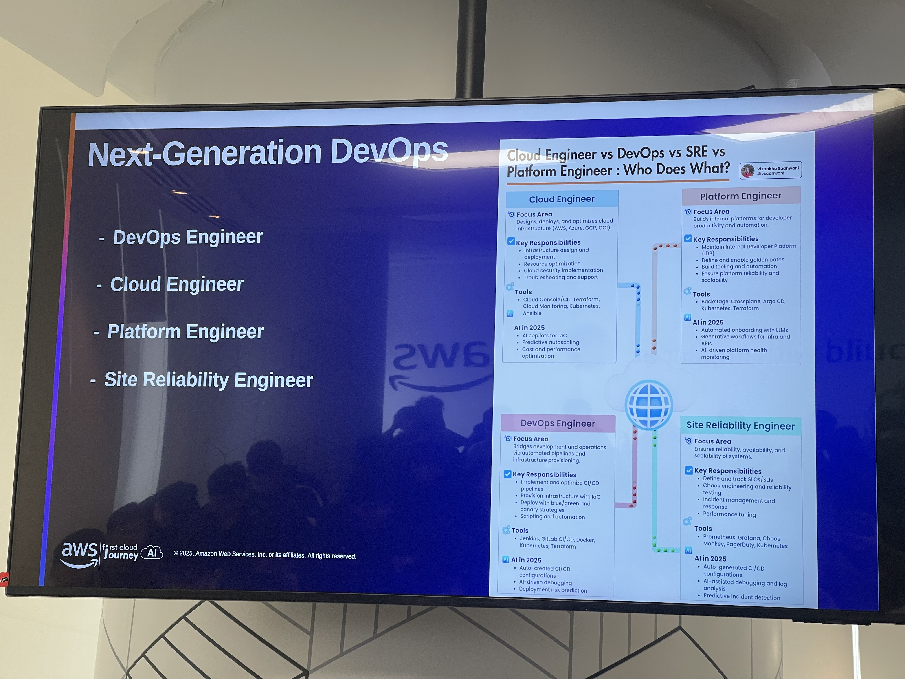

Event 3
DevOps on AWS
I. General Information About the Event
- Event Name: AWS Cloud Mastery Series #2 – DevOps on AWS
- Time: Monday, November 17, 2025, from 8:30 AM to 5:00 PM
- Location: AWS Vietnam Office
- Audience: Students, interns, and junior engineers interested in DevOps, system operations, and infrastructure automation on AWS.
- Main Objectives:
- Gain a clear understanding of the DevOps mindset and why DevOps/Platform Engineering has become a critical role in modern organizations.
- Learn the ecosystem of AWS DevOps Services (CodeCommit, CodeBuild, CodeDeploy, CodePipeline) and how to construct a full CI/CD pipeline.
- Become familiar with Infrastructure as Code (IaC) through CloudFormation and AWS CDK; understand why console-based operations become inefficient as systems scale.
- Build a structured understanding of container services on AWS, including ECR, ECS, EKS, and App Runner, along with appropriate deployment strategies.
- Understand concepts and tooling in Monitoring & Observability (CloudWatch, X-Ray, Grafana, Prometheus) to operate systems reliably and proactively.
II. Detailed Agenda
2.1. Morning Session – DevOps Mindset & CI/CD & IaC
2.1.1. 8:30 – 9:00 | Welcome & DevOps Mindset (Quang Tinh – Platform Engineer)
-
Speaker Quang Tinh opened the session by connecting the content to the previous AI/ML workshop and setting the foundation for the day: DevOps exists to bridge the gap between Development and Operations.
-
DevOps is not just a job title—it is a collaborative, automation-centric way of working.
-
Core elements of DevOps culture emphasized:
- Collaboration: Dev and Ops work as one unified team with shared ownership of the product.
- Automation-first: prioritize automating build, test, and deployment processes.
- Measurement & Feedback: decisions must be based on observable metrics.
-
Standard DORA metrics used to evaluate DevOps maturity:
- Deployment Frequency
- Lead Time for Changes
- MTTR (Mean Time to Recovery)
- Change Failure Rate
-
The role of a Platform Engineer is described as building the shared deployment/infrastructure platform enabling teams to develop, test, and operate consistently and effectively.
2.1.2. 9:00 – 10:30 | AWS DevOps Services – CI/CD Pipeline (Kha – CI/CD Workflow)
- Speaker Kha provided a detailed walkthrough of how to build CI/CD pipelines using AWS native tools.
- The pipeline is broken down into four primary components:
-
Source Control – AWS CodeCommit & Git strategies
- CodeCommit is AWS’s managed Git service with deep IAM integration.
- Two Git strategies discussed:
- GitFlow – suitable for structured release cycles with many branches.
- Trunk-based Development – supports continuous CI/CD with frequent small commits.
-
Build & Test – AWS CodeBuild
- CodeBuild handles compilation and automated tests; workflows are defined in
buildspec.yml. - Produces artifacts used in deployment stages.
- CodeBuild handles compilation and automated tests; workflows are defined in
-
Deployment – AWS CodeDeploy
- Three major deployment strategies:
- Blue/Green – highest safety margin.
- Canary – gradually shift traffic.
- Rolling update – update instances progressively.
- Three major deployment strategies:
-
Orchestration – AWS CodePipeline
- Connects source → build → deploy into one automated sequence.
- Supports manual approvals, automated tests, and additional custom stages.
- The core theme: from commit to production, every step must be automated, observable, and verifiable.
2.1.3. 10:45 – 12:00 | Infrastructure as Code (IaC) – Thinh Nguyen & Hoang Anh
-
Session opened with the question:
“Why is ClickOps no longer suitable as systems scale?”
-
Main reasons:
- Automation: manual processes cannot be automated.
- Scalability: difficult to manage large numbers of resources.
- Reproducibility: nearly impossible to maintain identical environments across dev/staging/prod.
- Collaboration: no single source of truth.
-
AWS CloudFormation – AWS’s native IaC service:
- Concepts: template, stack, stack update, drift detection.
- Advantages: version control, consistent multi-environment deployment, rollback on errors.
-
AWS CDK (Cloud Development Kit):
- Define infrastructure using programming languages (TypeScript, Python, Java…).
- Abstractions via constructs enable strong reuse.
- CDK synthesizes CloudFormation, combining flexibility of coding with IaC robustness.
-
Conclusion:
- CloudFormation → best for low-level, AWS-native configurations.
- CDK → best for large projects requiring abstraction and reusability.
2.2. Afternoon Session – Container Services & Monitoring/Observability
2.2.1. 13:00 – 14:30 | Container Services on AWS (Tran Vi)
-
Began with the fundamentals of containers and the differences between containers vs virtual machines.
-
Introduction to the Docker workflow: Dockerfile → build → push → run.
-
Amazon ECR:
- AWS-managed container registry with scanning, immutable tags, lifecycle policies.
-
Amazon ECS:
- AWS’s native container orchestrator—simple and deeply integrated.
- Two execution modes: EC2 mode and Fargate mode (serverless).
- Key components: cluster, task, task definition, service.
-
Amazon EKS:
- Managed Kubernetes—ideal for high flexibility and portability requirements.
-
AWS App Runner:
- Extremely fast service deployment from source or container image without managing infrastructure.
2.2.2. 14:45 – 16:00 | Monitoring & Observability (Anh Nghiem, Anh Long, Anh Quy)
-
Explanation of the difference between Monitoring and Observability.
-
Main AWS tools: CloudWatch, X-Ray, Managed Grafana, Prometheus.
-
CloudWatch:
- Collects metrics and logs, generates alarms, and builds operational dashboards.
-
AWS X-Ray:
- Enables distributed tracing across microservices, identifies bottlenecks, supports debugging.
-
Observability best practices:
- Standardize logs–metrics–traces, configure appropriate alerts, avoid alert fatigue.
2.2.3. 16:00 – 17:00 | DevOps Best Practices, Career & Q&A
- Summary of the day: mindset → IaC → CI/CD → containers → observability.
- Reinforced principles: automated testing, safe deployment patterns, fast rollback, blameless postmortems.
- Career guidance on AWS certifications for DevOps/Platform Engineering.
III. Key Takeaways
- DevOps is a unified mindset, not just a toolset.
- A strong CI/CD pipeline ensures reliability and consistency from code to production.
- IaC is mandatory for scalable, maintainable infrastructure—ClickOps does not scale.
- AWS containers offer multiple layers of abstraction for varied workload complexity.
- Observability is essential for long-term operational stability.
IV. Application Plan for Personal Projects & Learning
- Standardize DevOps workflow and create a template CI/CD pipeline.
- Move manual operations to IaC using CloudFormation/CDK.
- Containerize applications and experiment with ECS/App Runner deployment.
- Set up baseline monitoring with CloudWatch + X-Ray.
- Plan the certification path for DevOps/SRE on AWS.
V. Event Photos


